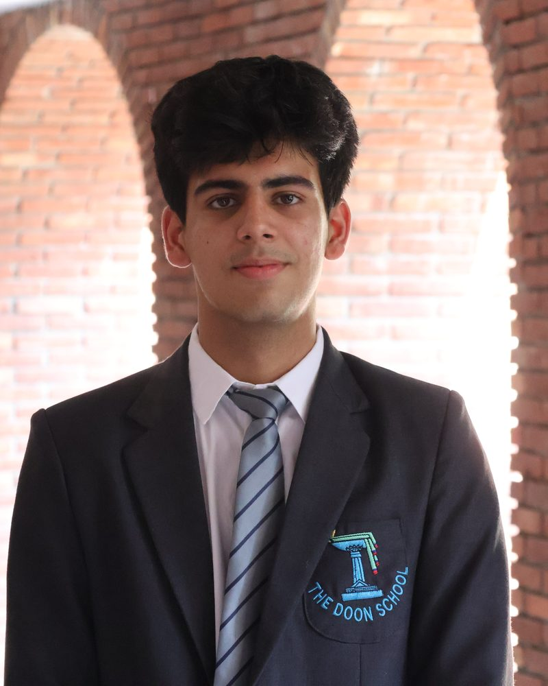

Aarav Anand
Student-in-Charge
“The best parts of life rarely come from knowing exactly what we are doing.”
Over the three days in December, the IPSC IT Fest will be rather more than a competition. It will be a place where ideas collide, where friendships begin, where plans fail spectacularly, and where somebody discovers, usually at the worst possible moment, that the solution was much simpler than they thought.
Read the letter
As Student-in-Charge of Computer Science, I have the privilege of welcoming you to The Doon School. Beyond the events, the points and the trophies, I hope this fest reminds us of something fairly fundamental: that the best parts of life rarely come from knowing exactly what we are doing.
We will make mistakes. We will improvise. We will start over. We will find people who think differently from us, and some of us will discover that they teach us more in three days than a textbook manages in a term.
So come with ambition, but also with curiosity. Come to win, but be willing to lose. Come prepared, but leave room for the unexpected, because the events have been built to supply rather a lot of it.
“Stay hungry. Stay foolish,” as Stewart Brand put it. For three days at Chandbagh we will step outside the ordinary and build something worth remembering.
Welcome to the IPSC IT Fest 2026.
Aarav Anand · Student-in-Charge